Скриншоты App Store — BumpCheck
Новая тройка C2 наверху: изменён только второй кадр. На телефоне листайте ряд вбок. Нажатие увеличивает кадр прямо здесь.
C2 · Проверить перед покупкой
Новый второй кадрПервый и третий сохранены без изменений. Во втором — конкретный момент у магазинной полки: штрихкод, телефон и результат проверки ингредиента.
1320 × 2868 · RGB PNG · en-US · 22 сентября 2026
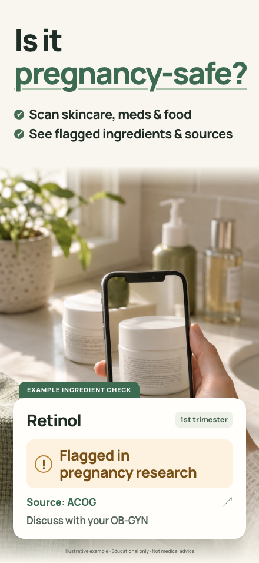
Скачать PNG 01
{kind=link}
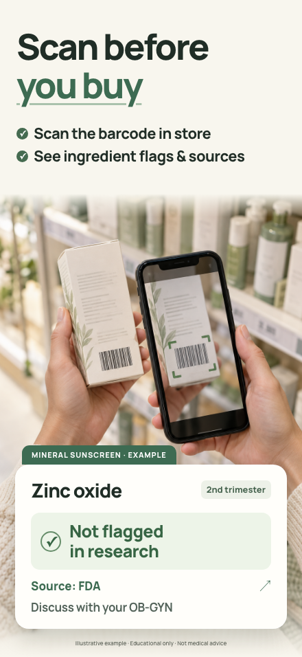
Скачать PNG 02
{kind=link}
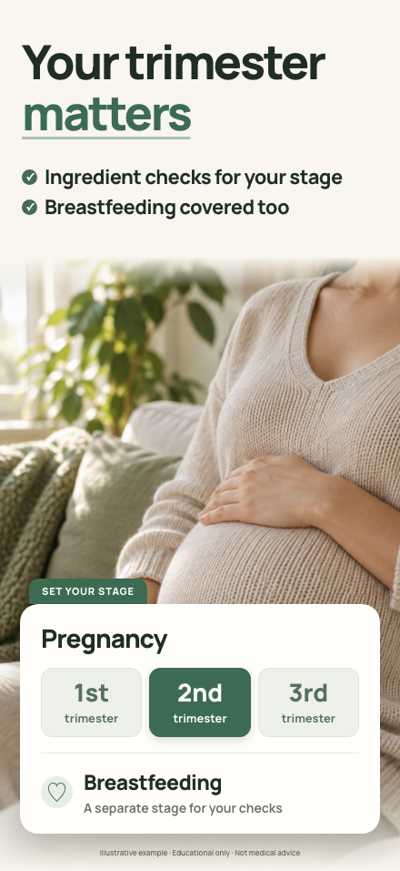
Скачать PNG 03
{kind=link}
Почему именно эти первые три
| Кадр | Роль в решении скачать | Что изменено относительно C1 |
|---|---|---|
| Is it pregnancy-safe? | Зачем проверять: беременность и вопрос к продукту. | Без изменений по обратной связи владельца. |
| Scan before you buy | Как использовать прямо сейчас: проверить покупку у полки. | Вместо безымянной коробки ночью — крупный штрихкод, сканирующий телефон и результат. Действие читается из самой сцены. |
| Your trimester matters | Почему это именно для вас: срок и кормление. | Без изменений по обратной связи владельца. |
По образцу Cysta и Salvora: одна главная мысль, крупная сцена, видимый результат. Проверены отдельные превью при 180 и 220 px; заголовки и карточки не переполняются.
Весь ряд при 220 px · При 180 px
{kind=link}
{kind=link}
Основание из спринта V2. В материалах позиционирования быстрый штрихкод — сильный аргумент начать пользоваться приложением. Но контексты различаются: в магазине уместен barcode, дома и ночью — имя или фото состава. В коде barcode-поиск идёт через базы косметики и еды; отдельный каталог лекарственных штрихкодов не подтверждён. Поэтому новая сцена — покупка средства ухода.
Проверено в sprint-v2 @ 8f4e318: SPRINT_V2.md, CONSILIUM_POSITIONING.md, FIRST_SESSION_HOME.md, CONSILIUM_DESIGN.md, ревью Sam и BarcodeService.swift. Новый Jev-прогон не запускался; оценки старого лекарственного концепта к C02 не относятся.
Второй кадр: было → стало
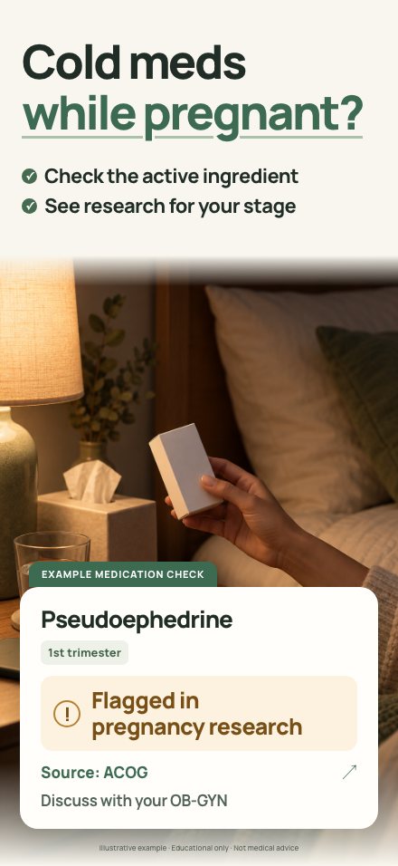
{kind=link}
Архив: что Jev проверял для C1
Эти числа относятся к прежним текстовым концептам C1. Новый второй кадр C2 ими не оценивался.
12 синтетических профилей × два обратных порядка вариантов = 24 успешных запроса. По три профиля из четырёх потребительских когорт. Модель оценивала тексты и описания сцен; пиксели ей не передавались.
| Сравнение | Модельное предпочтение | Ограничение |
|---|---|---|
| Ясность первого концепта «Is it pregnancy-safe?» | .678 | Два порядка: .604 / .752. Сравнивался весь текстовый концепт, а не один заголовок. |
| Мотив скачать для того же концепта | .588 | Сильно зависит от порядка: .388 / .788. Это не вероятность установки. |
| Дополнительная тема третьего кадра | Срок/кормление .448; источники .336; повторная рутина .021 | Тема срока поддержана; финальная фраза «Your trimester matters» — редакционная переработка. |
| Ясность лекарственного концепта | «Cold meds while pregnant?» .600 | Финальная графика отдельно моделью не тестировалась. |
Это суждения модели, не опрос реальных людей и не измерение конверсии. Реальная проверка — Product Page Optimization с установками и последующими триалами. Подробные результаты.
Источники и границы примеров
«Pregnancy-safe?» — вопрос человека, не обещание гарантированной безопасности. Результаты остаются образовательными и предлагают обсудить ингредиент с врачом.
Пример с ретинолом сверён с материалом ACOG о коже во время беременности. Zinc oxide и FDA-источник есть в базе спринта; контекст минерального санскрина проверен по AAD о коже при беременности. FDA — источник о солнцезащитных средствах, не одобрение конкретного продукта для беременности. Карточка относится к ингредиенту, а не всей формуле товара.
C02 проверен по коду спринта 8f4e318; C01/C03 сохранены из C1. Новая сборка приложения в этой сессии не выполнялась. Размеры и SHA-256 экспортов · Обоснование · Промпт новой сцены, встроенный ImageGen.
Предыдущие варианты
T · Один вопрос, одна сцена, один ответ
На рассмотрениеФормула Hepatica / Cysta T / SnapFlip: заголовок в четверть кадра (64 pt на макете 440, вторая строка — шалфей), одна строка подзаголовка 23 pt (в r1 было 17 и внутри телефона — 11), одна свежая предметная сцена от Codex без запечённого текста и без лиц, одна белая карточка с одним большим вердиктом из реальных строк приложения («Looks good for T1», «Flagged for T3», «Ingredients checked (7)», «Discuss with your OB-GYN»). Без телефона с интерфейсом, без рядов буллетов. Первые три кадра — три самые широкие боли трёх главных когорт.
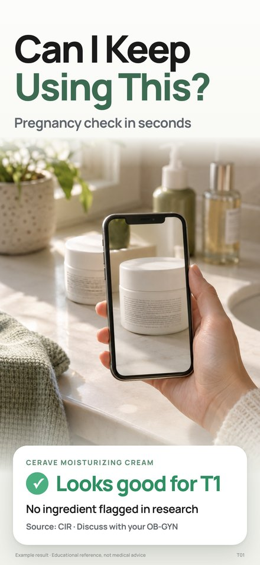
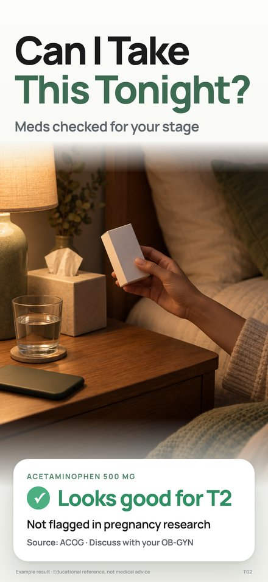
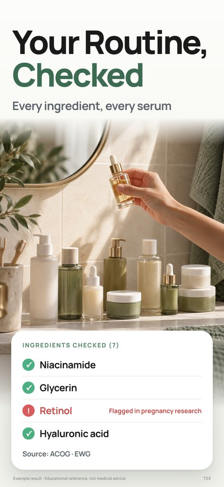
Как это выглядит в выдаче поиска (220 px, без увеличения):
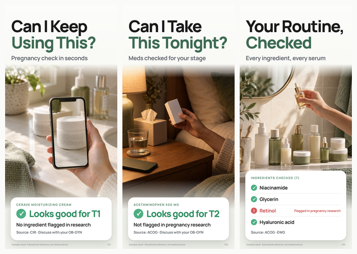
T04–T08 · углубление и позиционирование
Порядок: стадия → источник для врача → еда → история → что это за приложение. Кадр «Stop Googling at 2am» из r1 сюда не вошёл: как заголовок он сильный (0.75), но как боль, ради которой открывают приложение, — 0.02. Его место — подзаголовок или Custom Product Page, не слот.
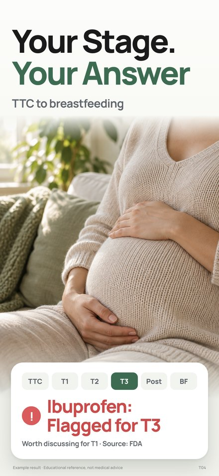
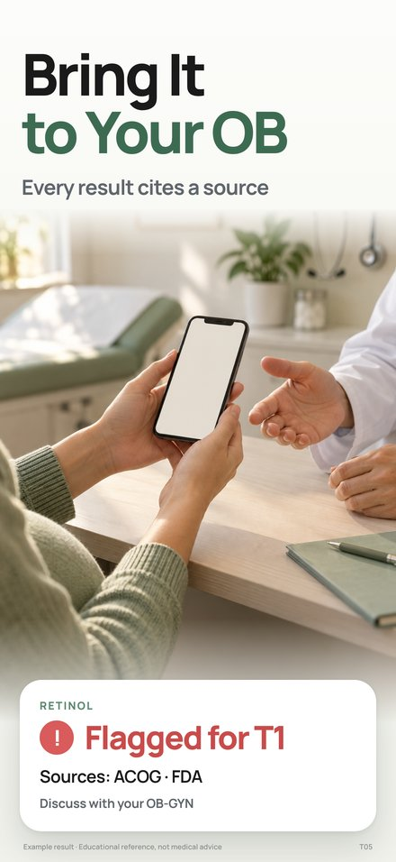
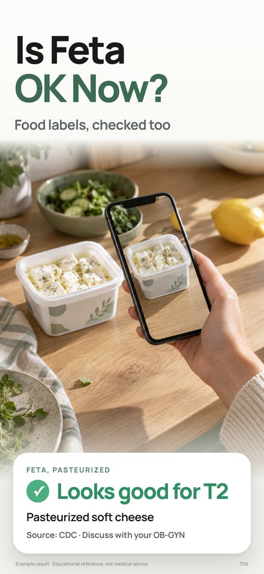
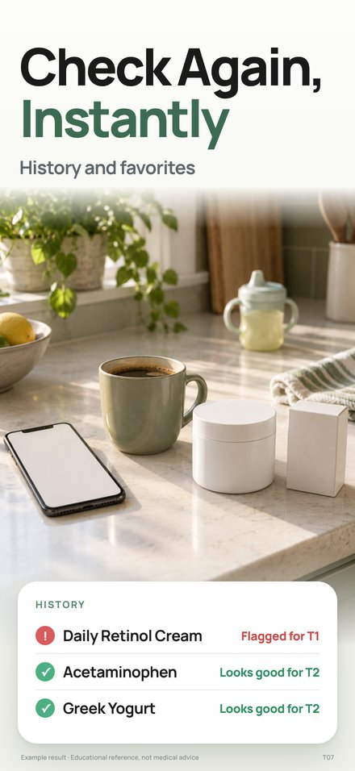
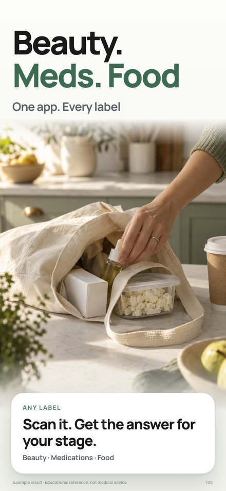
Почему r1 не работает на телефоне (разбор Claude)
| Кадр r1 | Что там | Почему пролистывают |
|---|---|---|
| 01 Know in 2 seconds. | заголовок про скорость, телефон с полным экраном результата (7 строк ингредиентов), растение как декор | заголовок ~15 % кадра и отвечает не на её вопрос; UI в телефоне нечитаем в 220 px; сцены нет — реквизит |
| 02 Stop Googling at 2am. | единственная сцена с человеком — но это скрин онбординга внутри телефона внутри кадра | двойная рамка: фото → телефон → кадр; 4 строки тела 11 pt и кнопка — никто не читает; Jev: боль «гуглю ночью» 0.02 как причина открыть приложение |
| 03 Three ways. One answer. | фича: barcode / photo / paste, телефон с формой ввода | название функции, не польза; в 220 px виден только пустой экран |
| 04 Same ingredient. Different trimester. | блокнот «T1 → T2 → T3», телефон с тремя мелкими строками | идея верная, показана мелко; блокнот не её жизнь |
| 05 Backed by ACOG. NIH. EWG. | телефон с экраном источников, водяные знаки | аббревиатуры без человека; доверие — слот 5–7, не самостоятельный якорь |
| 06 Meds, not just skincare. | аптечка, телефон с результатом ибупрофена | самая острая боль когорты Sam (Jev 1.00) стоит шестой; заголовок говорит о конкуренте, а не о её вопросе «можно ли мне это сейчас» |
| 07 Already checked. | полка с бутылками, телефон со списком History | полка красивая, но пустая по смыслу; список в телефоне нечитаем |
Общий узор: один шаблон на все семь кадров — телефон по центру с плотным UI, заголовок в две строки среднего размера, подзаголовок-жаргон («Trimester-aware verdict», «Verdicts that follow your weeks»). Jev по форматам: карточка без телефона 0.68 на «нажму» и 0.87 на «понятно», телефон с полным UI (формат r1) — 0.07 и 0.03.
Что показал Jev для T
24 синтетических человека × 2 прохода с обратным порядком × 4 группы вопросов, 192/192. Веса когорт Maya .35 · Dana .20 · Sam .20 · Elena .15 · Dr. Wu .10. Jev оценивает описания, а не пиксели. Это структурированное мнение модели, не опрос.
- Боли, от большей к меньшей (за что откроет приложение). Лекарства 0.29 · скинкер-рутина 0.27 · «что на полке оставить» 0.23 · стадия 0.07 · источники 0.05 · еда 0.04 · гуглю ночью 0.02 · история 0.02 · «всё в одном» 0.02. Три верхние боли — это три когорты: Sam → лекарства (1.00), Dana → рутина (0.64), Maya → полка (0.49).
- За что заплатит. Полка 0.22 (Maya 0.43) · лекарства 0.22 (Sam 0.97) · источники 0.17 (Dr. Wu 0.59) · стадия 0.12. Еда — 0.00.
- Первый кадр. Jev по описанию боли: лекарства 0.24, рутина 0.23, стадия 0.16, полка 0.14. Поставлен всё же T01 «полка»: самая крупная когорта (Maya, 35 %), первая по «заплатит», и заголовок «Can I Keep Using This?» — самый понятный из всех 45 (0.80 на понятность). Лекарства — T02, рутина — T03. Это редакционное решение поверх ничьей, не измерение.
- Формат. Без телефона, одна большая карточка 0.68 / понятность 0.87; карточка в телефоне 0.25; телефон с полным UI (как r1) 0.07. Сцены: руки и предмет без лиц 0.76, женщина с лицом 0.24.
- Карточки. Везде побеждает облегчение, не страх: «Looks good for T1» 0.81 против «Flagged» 0.10 на T01; на лекарствах «Looks good» 0.49 против «Flagged» 0.16; на еде 0.73. Исключение — T05 «источник»: карточка «Retinol · Flagged for T1 · ACOG · FDA» 0.78.
- Сцены. T01 телефон над этикеткой 0.55 (полка с рукой 0.40); T02 тумбочка ночью 0.84; T03 полка ванной с рукой 0.74; T04 руки на животе 0.71; T05 телефон через стол врачу 0.55 (порядок-чувствительно, .45/.64; приёмная 0.42 — запасная без белого халата); T06 телефон над этикеткой 0.88; T07 ряд на кухне 0.68; T08 сумка 0.56.
Заголовки — таблица турнира
| Кадр | Боль | Заголовок-победитель | Подзаголовок | w | a / b | 2-е место |
|---|---|---|---|---|---|---|
| T01 | №3 полка (Maya №1) | Can I Keep Using This? | Pregnancy check in seconds | 0.50 | 0.52 / 0.48 | Pregnant? Check Your Shelf 0.38 |
| T02 | №1 лекарства | Can I Take This Tonight? | Meds checked for your stage | 0.67 | 0.59 / 0.75 | Cold Meds, Checked 0.16 |
| T03 | №2 рутина | Your Routine, Checked | Every ingredient, every serum | 0.47 | 0.58 / 0.38 | Snap the Label. Done 0.44 — ничья, порядок-чувствительно |
| T04 | №4 стадия | Your Stage. Your Answer | TTC to breastfeeding | 0.48 | 0.49 / 0.47 | From TTC to Nursing 0.29 |
| T05 | №5 источники | Bring It to Your OB | Every result cites a source | 0.65 | 0.61 / 0.72 | ACOG. NIH. FDA. Cited 0.21 |
| T06 | №6 еда | Is Feta OK Now? | Food labels, checked too | 0.38 | 0.44 / 0.34 | Can I Eat This? 0.25 |
| T07 | №8 история | Check Again, Instantly | History and favorites | 0.66 | 0.65 / 0.66 | Your Shelf, Saved 0.18 |
| T08 | позиционирование | Beauty. Meds. Food | One app. Every label | 0.35* | 0.33 / 0.37 | One App. Every Label 0.30 (на «нажать»), взят в подзаголовок |
* T08 — победитель по понятности; по «нажать» лидировал «One App. Every Label» 0.30, объединены в заголовок + подзаголовок. Проверено: «Is It Pregnancy-Safe?» — 0.02, «Stop Googling at 2am» — 0.75 как заголовок, но боль 0.02. Названия функций проигрывают вопросам: «Retinol? Salicylic Acid?» 0.06, «Paste Your Sephora List» 0.02.
Кандидаты в Custom Product Page (расхождения когорт)
- Sam (лекарства, запросы «tylenol pregnancy»): первым кадром T02 «Can I Take This Tonight?» — 0.98 против 0.01 у полки.
- Dana (скинкер): первым T03 «Your Routine, Checked» — 0.60; для Sam и Dr. Wu тот же слот выигрывает «Snap the Label. Done» (0.67 / 0.58).
- Dr. Wu / Elena (доверие, повторная беременность): T05 «Bring It to Your OB» поднимается на третье место (источники — 0.59 «заплатит» у Wu).
Слабые места T
- T01 vs T02 первым — по Jev ничья между тремя когортами; решает PPO в App Store Connect, не этот турнир.
- T05: в кадре рукав белого халата. Если врача в кадре не нужно совсем — запасная сцена «руки с телефоном в приёмной» (0.42).
- T06 еда — самая слабая боль (0.04 / 0.00 «заплатит»); держится как доказательство охвата. Кандидат на замену «Stop Googling at 2am» как эмоциональный кадр, если нужен.
- Ни один заголовок не содержит слова «pregnancy» — категорию несут подзаголовок T01 и название приложения в выдаче. В 220 px подзаголовок читается.
- Compliance: в оверлеях нет «safe/unsafe»; все вердикты — реальные строки ResultView; сноска «Educational reference, not medical advice» на каждом кадре.
Данные: research/screenshots-t1-jev-2026-09-20/ (options, results, analysis), рендер, промпты и исходники сцен: marketing/appstore-v2/t1/, разбор: t1/DECISION.md.
Ваше решение по T
Скопируйте и заполните — или просто «T ок».
Серия: T / r1 оставить / другое Порядок первых трёх: полка → лекарства → рутина / лекарства первым / другое T01–T08: ок / изменить: … T05: ок / без халата Дальше: локализация по T — да / нет
r1 · Сейчас в App Store (версия 1.3)
В стореСемь кадров одного шаблона: заголовок в две строки, подзаголовок, телефон по центру с полным экраном приложения, натюрморт вокруг. Кадр 8 (пейволл) снят за 2.3.7. Разбор по кадрам — во вкладке T.
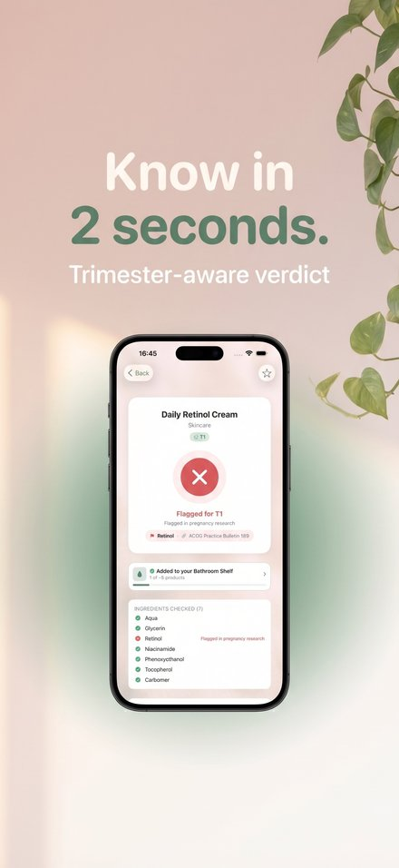
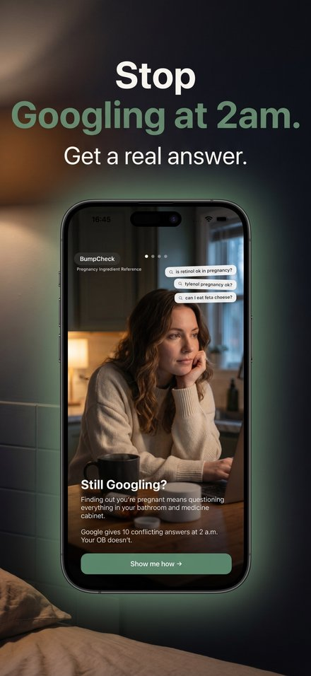
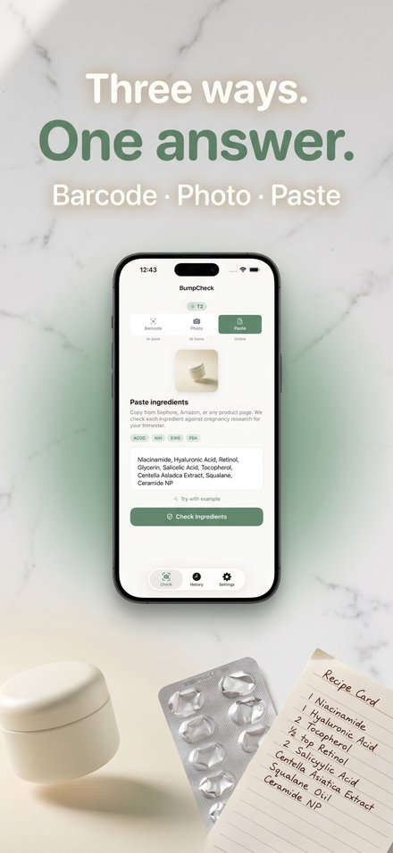
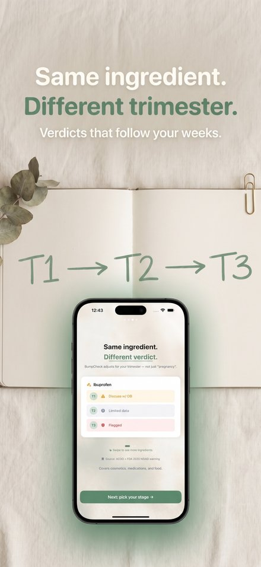
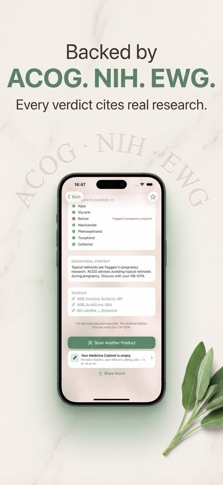
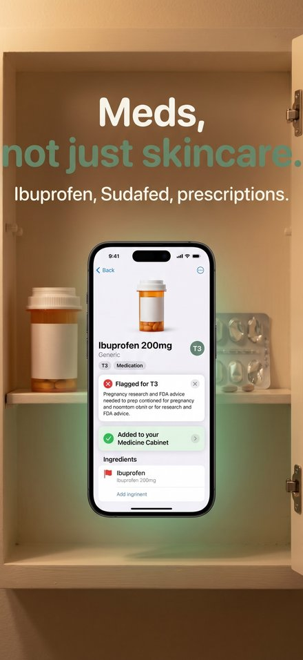
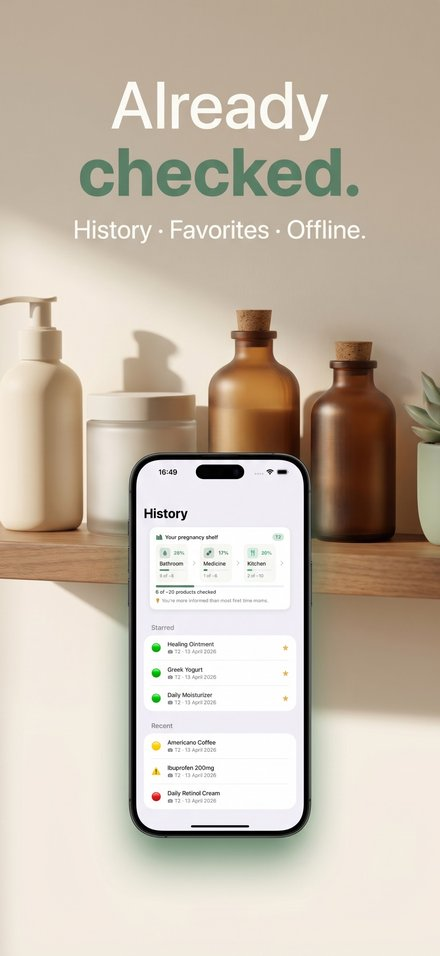
Те же первые три в 220 px — для сравнения с T:
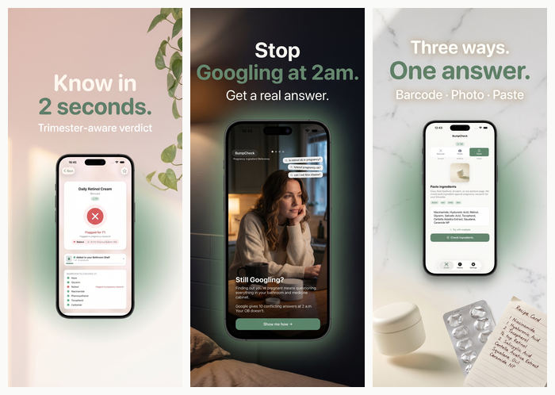